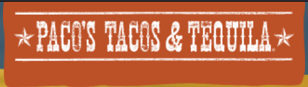
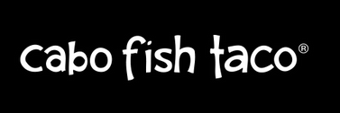

Paco's Tacos and Tequila
Paco’s Tacos and Tequila is a southwestern Mexican restaurant. It is rated number 19 out of all the restaurants in Charlotte on TripAdvisor. Some of the food includes the Unholy Guacamole and Chili Con Queso.
Cabo Fish Taco Baja Seagrill
Cabo Fish Taco Baja Seagrill is a seafood, Mexican restaurant. It is known for its bar scene and good specials. Some of the food it has are the steak taco and the avocado pasta salad.
